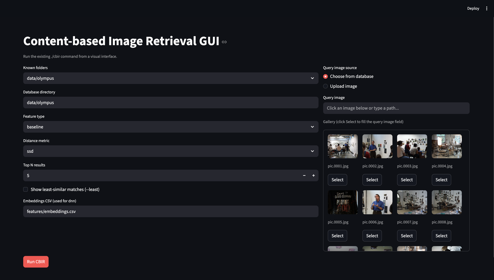

Project 2:
Content-based Image Retrieval
1. Project Description
This project implements a content-based image retrieval (CBIR) system
that matches a query image to a database by comparing visual features.
The system supports baseline patch matching, color histograms,
multi-region histograms, texture histograms (Sobel magnitude), deep
network embeddings, and a custom feature configuration for a chosen
category. Each method produces a feature vector for the target and
database images, computes a distance metric, and returns the top-N
closest matches.
2. Required Results
Task 1 — Baseline Matching
Review:
What it is: A baseline retrieval method to validate the pipeline using a
simple, fixed image region and a basic distance metric.
What we did: Implemented a 7x7 center-patch feature and ranked images
with SSD for the required query. - Query: pic.1016.jpg
- Top matches: - pic.1016.jpg
 - pic.0986.jpg
- pic.0986.jpg
 - pic.0641.jpg
- pic.0641.jpg
 - pic.0547.jpg
- pic.0547.jpg

Task 2 — Histogram Matching
Review:
What it is: Use at least a 2D color histogram as the feature vector and
compare with histogram intersection (implemented by you).
What we did: Computed a whole-image RG chromaticity histogram (16x16
bins), normalized counts, and used histogram intersection for matching.
- Query: pic.0164.jpg
- Top matches: - pic.0164.jpg
 - pic.0080.jpg
- pic.0080.jpg
 - pic.1032.jpg
- pic.1032.jpg
 - pic.0461.jpg
- pic.0461.jpg

Task 3 — Multi-histogram
Matching
Review:
What it is: Use two or more color histograms (e.g., different regions)
and combine their distances with a custom weighting scheme.
What we did: Built top/bottom RGB histograms (8 bins per channel) and
combined histogram-intersection distances with equal weights. - Query:
pic.0274.jpg
- Top matches: - pic.0274.jpg
 - pic.0273.jpg
- pic.0273.jpg
 - pic.1031.jpg
- pic.1031.jpg
 - pic.0409.jpg
- pic.0409.jpg

Task 4 — Texture + Color
Review:
What it is: Combine a whole-image color histogram with a texture
histogram and design a distance metric that balances both.
What we did: Used an RGB color histogram plus a Sobel magnitude
histogram for texture, then compared with histogram intersection using
equal weights. - Query: pic.0535.jpg
- Top matches: - pic.0535.jpg
 - pic.0004.jpg
- pic.0004.jpg
 - pic.0001.jpg
- pic.0001.jpg
 - pic.0356.jpg
- pic.0356.jpg
 - Comparison vs Task 2/3: The
texture+color method shifts matches toward images with similar edge
structure (buildings/geometry) rather than only color similarity,
compared to the histogram-only methods.
- Comparison vs Task 2/3: The
texture+color method shifts matches toward images with similar edge
structure (buildings/geometry) rather than only color similarity,
compared to the histogram-only methods.
Task 5 — Deep Network
Embeddings
Review:
What it is: Use deep network embeddings (e.g., ResNet18 global average
pooling output) as features and match with a suitable distance
metric.
What we did: Loaded precomputed ResNet18 embeddings from CSV and used
cosine distance to rank results for the required queries. - Query:
pic.0893.jpg
- Top matches: - pic.0893.jpg
 - pic.0897.jpg
- pic.0897.jpg
 - pic.0136.jpg
- pic.0136.jpg
 - pic.0146.jpg
- pic.0146.jpg
 - Query: pic.0164.jpg
- Query: pic.0164.jpg
- Top matches: - pic.0164.jpg
- pic.1032.jpg
- pic.0213.jpg
 - pic.0690.jpg
- pic.0690.jpg
 - Comparison vs classic
features: DNN matches tend to preserve semantic content and layout even
when overall color distributions differ, while classic histograms bias
toward color similarity.
- Comparison vs classic
features: DNN matches tend to preserve semantic content and layout even
when overall color distributions differ, while classic histograms bias
toward color similarity.
Task 6 — Classic vs DNN
Comparison
Review:
What it is: Compare classic feature retrieval to DNN embeddings on 2-3
images and discuss qualitative differences.
What we did: Ran histogram RG and DNN embeddings on the specified images
(1072, 0948, 0734) and summarized how color-biased vs semantic matches
differ. - Queries: pic.1072.jpg, pic.0948.jpg, pic.0734.jpg
- Summary: - pic.1072.jpg: Histogram RG returns color-similar scenes;
DNN returns images with similar scene structure even with different
palettes. - pic.0948.jpg: Histogram RG emphasizes color tone; DNN yields
closer scene/subject context. - pic.0734.jpg: DNN results show
near-neighbor scene continuity, while histogram RG mixes in visually
similar colors from different contexts.
Task 7 — Custom
Design (Sunset-Oriented Feature)
Review:
What it is: Design a custom feature for a category of your choice
(optionally including DNN features, but not exclusively) and report best
and least similar matches.
What we did: Implemented a sunset-oriented 3-region RGB histogram with
higher weight on the horizon/sky transition and used histogram
intersection to retrieve top-5 and least-5 matches. - Queries:
pic.0048.jpg, pic.0552.jpg
- Top 5 matches (pic.0048.jpg): - pic.0048.jpg
 - pic.0552.jpg
- pic.0552.jpg
 - pic.0533.jpg
- pic.0533.jpg
 - pic.1003.jpg
- pic.1003.jpg
 - pic.1059.jpg
- pic.1059.jpg
 - Least similar (pic.0048.jpg):
- pic.0511.jpg
- Least similar (pic.0048.jpg):
- pic.0511.jpg
 - pic.0558.jpg
- pic.0558.jpg
 - pic.0228.jpg
- pic.0228.jpg
 - pic.0890.jpg
- pic.0890.jpg
 - pic.0689.jpg
- pic.0689.jpg
 - Top 5 matches (pic.0552.jpg):
- pic.0552.jpg
- Top 5 matches (pic.0552.jpg):
- pic.0552.jpg
- pic.0048.jpg
- pic.0324.jpg
 - pic.0197.jpg
- pic.0197.jpg
 - pic.0958.jpg
- pic.0958.jpg
 - Least similar (pic.0552.jpg):
- pic.0511.jpg
- Least similar (pic.0552.jpg):
- pic.0511.jpg
- pic.0558.jpg
- pic.0228.jpg
- pic.0890.jpg
- pic.0046.jpg

3. Extensions
We built a lightweight Streamlit front-end to run CBIR visually. The
GUI lets users pick a query image and database folder, choose the
feature type and distance metric, set N, optionally show
least-similar results, and display thumbnail grids of the ranked images.
It wraps the compiled C++ cbir binary and supports DNN
embeddings by accepting a CSV path.
 
4. Reflection
Building multiple feature extractors clarified how different
representations capture different aspects of visual similarity. The
classic histograms were fast and intuitive but biased toward color
distributions, while adding texture helped match structural cues. The
DNN embeddings frequently produced more semantically coherent matches,
especially when color alone was ambiguous. The custom sunset feature
benefited from emphasizing top-to-bottom regions, which aligned with the
sky-to-ground gradient often present in sunsets.
5. Acknowledgments
Sourav Das, Joseph Defendre. Course materials and OpenCV
documentation.